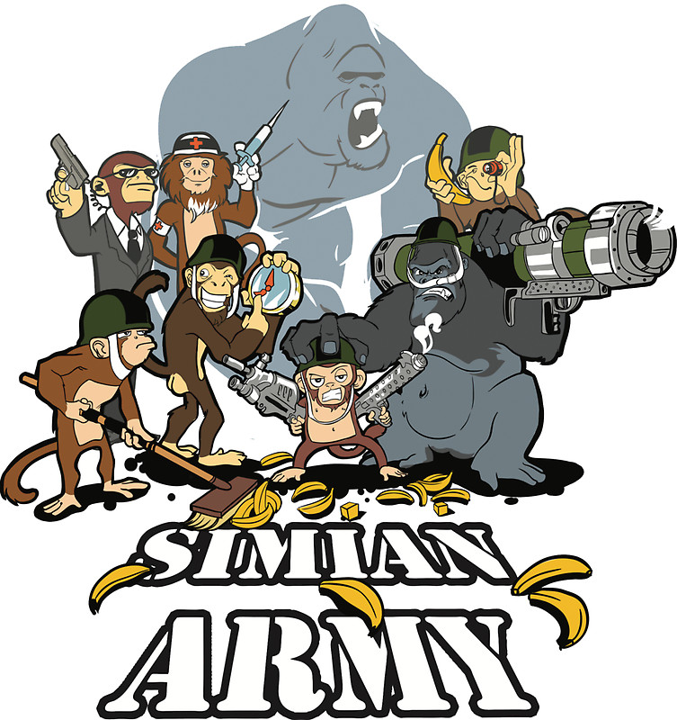
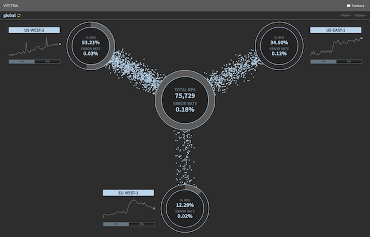
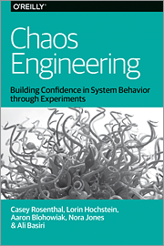

layout: true class: white-text name: cover background-image: url(images/cover.jpg) background-size: 100% background-position: center 20% --- layout: true class: divider name: divider background-color: #26546D --- layout: true class: divider name: sub-divider background-color: #70AD47 --- template: cover <div class="footer bottombox" style="background-color: #2C4B60;"> <h1>Chaos Engineering</h1> <h3>Martin Fietz</h3> </div> <div class="footer bottombox"> <h1>Chaos Engineering</h1> <h3>Martin Fietz</h3> </div> --- layout: true --- # Failure is EVERYWHERE! * List of post-mortems: https://github.com/danluu/post-mortems --- # Motivation * we lack theoretical predictive model for our complex, distributed system * must use empirical approach to understand how system will behave under conditions * proactively inject failures to identify weaknesses before we see for system-wide, aberrant behaviors * controlled experiment: gain confidence by triggering failures intentionally in a controlled way * is specifically about availability * "Resilience Engineering" --- # Definition > Chaos Engineering is the discipline of experimenting on a distributed system in order to build confidence in the system’s capability to withstand turbulent conditions in production. > Limited scope, continuous, disaster recovery <div style="text-align: right">Russ Miles</div> --- # Prerequisites * exposing *unknown* weaknesses * if you know the consequences, don't do the experiment (not verification) * monitoring system to determine current system state * one can only draw conclusions from experiments if there is visibility of system's behavior --- # In Practice * define 'steady state': measurable output that indicates normal behavior, e.g. throughput, error rates, latency * hypothize about steady state behavior of experimental group compared to stable control group * expose experimental group to simulated real-world events, e.g. crashes, malformed requests, traffic spikes * Try to disprove hypothesis by comparing steady state of control group and experimental group --- # Advanced Principles * build hypothesis around steady state behavior * focus on measurable output (system *does* work), not internal attributes (validate *how* it works) * vary real-workd events * prioritize by potential impact or estimated frequency * run experiments in production * sampling real traffic is only way to reliably capture request path * automate experiments to run continuously * minimize blast radius * minimize and contain fallout, e.g. kill switch --- # Design experiment 1. Construct hypothesis 2. Choose scope 3. Identify metrics 4. Notify organization 5. Execute 6. Analyze results 7. Increase scope 8. Automate --- # ... vs Disaster Recovery Testing --- template: divider # Tools --- # Netflix Simian Army <div style="text-align: center">  </div> --- count: false # Netflix Simian Army * Chaos Monkey: randomly disables production instances * Latency Monkey: induces artifical delays in RESTful client-server communication * Conformity Monkey: finds instances that don't adhere to best-practices and shuts them down * Doctor Monkey: removes unhealthy instances from services * Janitor Monkey: searches for unused resources and disposes of them * Security Monkey: finds security violations or vulnerabilities and terminates offending instances * Chaos Gorilla: simulates outage of an entire availability zone * Chaos Kong: kills an entire AWS region --- # vizceral * Intuition Engineering: holistic understanding of traffic as it flows through Netflix's control plane * not actively maintained... <div style="text-align: center">  </div> --- # Chaos Toolkit * free, open and community-driven toolkit and API * Extensions for Spring Boot, Kubernetes, Promethus, AWS; GCE, Azure etc. * Examples: * Kubernetes: kill microservice, remove service endpoint, scale microservice * AWS ECS: delete cluster, delete service, stop task * Website: https://chaostoolkit.org/ --- # Honorable mentions * Toxiproxy: TCP proxy to simulate network and system conditions * Chaos Monkey for Spring Boot: injects latencies, exceptions, and terminations * --- # Resources <div style="text-align: center"> <p>Free ebook!</p>  <p><a href=" https://www.oreilly.com/webops-perf/free/chaos-engineering.csp">https://www.oreilly.com/webops-perf/free/chaos-engineering.csp</a></p> </div> <!-- CONTEND END -->